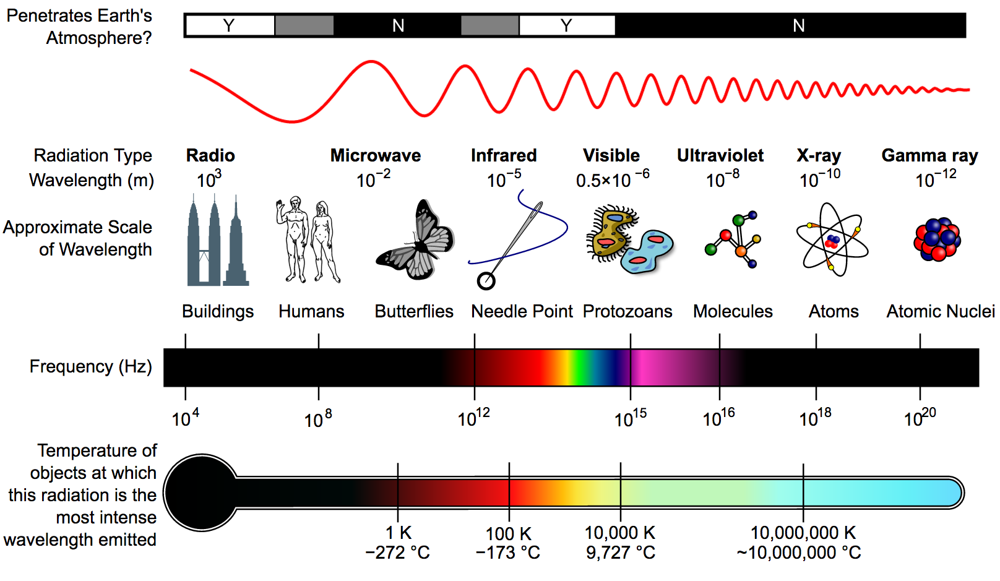

Science - Second Quarter
Table of Contents
- 2.1: Electromagnetic Waves
- 2.1.1: Electromagnetic Waves
- 2.1.2: The Electromagnetic Spectrum
- 2.1.2.1: Radio Waves
- 2.1.2.2: Microwaves
- 2.1.2.3: Infrared Waves
- 2.1.2.4: Visible Light
- 2.1.2.5: Ultraviolet Radiation
- 2.1.2.6: X-Rays
- 2.1.2.7: Gamma Rays
- 2.1.3: Effects of Electromagnetic Radiation
- 2.2: Light
- 2.3: Electromagnetic Induction
2.1: Electromagnetic Waves
2.1.1: Electromagnetic Waves
- What are Electromagnetic Waves?
- Electromagnetic Waves are produced by accelerating charged particles that oscillate about an equilibrium position,
with the electric field and magnetic field vibrating perpendicularly to each other and to the direction of wave propagation. - They are transverse waves.
2.1.2: The Electromagnetic Spectrum
- The Electromagnetic Spectrum 
- The electromagnetic spectrum is the continuous range of electromagnetic waves arranged in order of frequency and wavelength.
- It is divided into regions based on certain frequencies or wavelength intervals.
- The names assigned to these regions are only for convenience, there is no sharp dividing point between one type of wave and the next.
2.1.2.1: Radio Waves
- Radio Waves
- Radio waves are the longest of all electromagnetic waves, with its length ranging from 11-1 to 114 meters.
- The frequency of radio waves ranges from 3 * 114 to 3 * 1112 Hz or from 311 to 3,111 MHz.
- Common uses of radio waves include automatic doors, WiFi, MRI machines, and GPS.
2.1.2.2: Microwaves
- Microwaves
- Microwaves have a length ranging from 11-3 to 11-1 meters.
- Their frequency ranges from 3 * 118 Hz to 3 * 1111 Hz.
- Microwaves are commonly used in microwave ovens, communications, and medical fields.
2.1.2.3: Infrared Waves
- Infrared Waves
- Infrared literally means "below red".
- Its length ranges from 7.5 * 11-7 to 11-3 meters, and its frequencies at 3 * 1111 to 4 * 1114 Hz.
- Sir William Herschel, a British astronomer, discovered these rays in 1811.
- Common uses of infrared waves are in remote controls, some thermometers, and burglar alarm systems.
2.1.2.4: Visible Light
- Visible Light
- This is the part of the electromagnetic spectrum we can see.
- Its length is around 7.5 * 11-7 to 11-3 meters, and its frequency ranges from 4 * 1114 to 8 * 1114 Hz.
- The sequence of the colors of visible light, from shortest to longest, are Red, Orange, Yellow, Green, Blue, Indigo, and Violet.
- Visible light is used to help us see objects. It is also used in traffic lights, televisions, touchpad devices, and lasers.
2.1.2.5: Ultraviolet Radiation
- Ultraviolet Radiation
- Ultraviolet radiation is more popularly known as UV, which was discovered by German physicist Johann Wilhelm Ritter.
- The length of ultraviolet radiation ranges from 6 * 11-11 to 4 * 11-7 meters, and its frequencies range from 8 * 1114 to 1117 Hz.
- A major source of UV rays is the sun. Special lamps also emit UV rays.
- Uses for UV rays are in black lights, used to detect forged bank notes and forensic investigations, and sterilization of medical equipment.
2.1.2.6: X-Rays
- X-Rays
- X-rays are also called Roentgen rays, in honor of its discoverer, German physicist Wilhelm Conrad Roentgen.
- They have lengths ranging from 11-12 to 11-8 meters, and frequencies of around 1118 Hz.
- They are used in dental imaging, airport security checks, and detecting abnormalities in the skeletal system.
2.1.2.7: Gamma Rays
- Gamma Rays
- Gamma rays are the shortest of all electromagnetic waves, ranging from less than 11-14 to 11-11 meters, with frequencies of more than 1121 Hz.
- The sun, interstellar clouds, and remains of supernovas are sources of gamma rays.
- They are used to detect cracks in metals, food irradiation, and radiotherapy.
2.1.3: Effects of Electromagnetic Radiation
- Effects of Electromagnetic Radiation
- Based on its energy, electromagnetic radiation may be ionizing or nonionizing.
2.1.3.1: Ionizing Radiation
- Ionizing Radiation
- Ionizing radiation has sufficient energy to induce ionization.
- Ionization is the process of removing electrons from neutral atoms.
- Exposure to high levels of ionizing radiation may cause either an immediate effect and a delayed effect.
- Immediate effects may include death and radiation burns, while delayed effects include cancers and mutations.
- They include x-rays and gamma radiation.
2.1.3.2: Nonionizing Radiation
- Nonionizing Radiation
- Nonionizing radiation includes the other parts of the electromagentic spectrum.
- Although considered less dangerous than the ionizing type, it can still cause certain health issues.
- Radio waves and microwaves may interfere with pacemakers, infrared may cause burns and pain, and UV rays burn the skin.
2.2: Light
2.2.1: Reflection of Light
- Reflection of Light
- Reflection is the bouncing back of light into the same medium it has been travelling after striking a surface.
- The ray that strikes the surface is called the incident ray. [PO]
- The ray that rebounds from the surface is called the reflected ray. [OQ]
- A line perpendicular to the surface at the point of incidence is called the normal. [O]
- The angle between the incident ray and the normal is called the angle of incidence. [θi]
- The angle between the reflected ray and the normal is called the angle of reflection. [θr]
2.2.2: The Laws of Reflection
- The Laws of Reflection
- There are two types of reflection: Regular reflection and diffuse reflection.
- Regular reflection happens when light strikes a smooth surface, while diffuse reflection happens when light strikes a rough surface.
- Each individual ray for each type of reflection obeys these laws of reflection:
- The angle of incidence is equal to the angle of reflection. That is, θi = θr.
- The incident ray, normal, and reflected ray all lie on one plane.
- When a group of parallel rays strike a rough surface, the normal at the point of incidence is different for each ray.
- According to the laws of reflection, they will be scattered in different directions.
- The reflected rays cannot be parallel to one another.
2.2.3: Plane, Concave, and Convex Mirrors
- Mirrors
- A mirror is any surface that is smooth enough to produce a regular reflection of light incident upon it.
- There are two types of mirrors: Plane mirrors, and spherical mirrors.
- A plane mirror is a mirror with a flat surface.
- A spherical mirror is a mirror that has a reflecting surface taken from the surface of a sphere.
2.2.3.1: Plane Mirrors
- Plane Mirrors
- A plane mirror is a mirror with a flat surface.
2.2.3.2: Spherical Mirrors
- Spherical Mirrors
- A spherical mirror has its reflecting surface taken from the surface of a sphere. It may be concave or convex.
2.2.3.2.1: Concave Mirrors
- Concave Mirrors
- A concave mirror curves inward in the direction of the incident rays.
- Some examples of concave rays are makeup mirrors and the hollow part of a shiny spoon.
2.2.3.2.2: Convex Mirrors
- Convex Mirrors
- A convex mirror bulges outward to the incident rays.
- Some examples of convex mirrors are car rearview mirrors and the dome mirrors in supermarkets.
2.3: Electromagnetic Induction
2.3.1: Magnets
Credit: Science Group 2, Science Group 4
- Magnets
- A magnet is a material or object that produces a magnetic field.
- Magnetism is a scientific phenomenon that occurs from the interactions between charged particles, primarily electrons.
2.3.1.1: Types of Magnets
- Types of Magnets
- There are three types of magnets.
-
- Permanent Magnet
- These types of magnets do not lose their magnetic property once magnetized.
-
- Temporary Magnet
- These magnets are only magnetized in the prescence of a magnetic field.
-
- Electromagnet
- These only become magnetic once an electric current is applied.
2.3.1.2: Properties of Magnets
- Properties of Magents
-
- Attractive Property
- Magnets attract ferromagnetic materials such as iron, cobalt, and nickel.
-
- Repulsive Property
- Like magnetic poles repel each other and unlike magnetic poles attract.
-
- Directive Property
- A freely suspended magnet points at a north-south direction.
2.3.2: Electromagnetic Induction
Credit: Science Group 3
- Electromagnetic Induction
- Electromagnetic induction is the production of an electromotive force across an electrical conductor in a changing magnetic field.
- In 1820, Hans Christian Oersted accidentally discovered that an electric current produces a magnetic field.
- Then, in 1831, physicists Michael Faraday and Joseph Henry discovered that a changing magnetic field produces an electric current, a phenomenon known as electromagnetic induction.
2.3.2.1: Faraday's Law
- Faraday's Law
- This law states that a change in the strength of the magnetic field, also known as magnetic flux, induces a current.
2.3.2.2: Lenz's Law
- Lenz's Law
- This law states that the induced current creates a magnetic field that opposes the change in the magnetic flux.
2.3.3: Generators and Motors
Credit: Science Group 1
2.3.3.1: Generator
- Generator
- A generator is a machine that converts mechanical energy into electricity. It is sometimes called an alternator.
2.3.3.1.1: AC Generator
- AC Generator
- An alternating current (AC) generator is a machine that converts mechanical energy into electrical energy.
- Its input supply is mechanical energy supplied by steam turbines, gas turbines and combustion engines.
- The flow of current of the AC generator is alternate.
2.3.3.1.2: DC Generator
- DC Generator
- A direct current (DC) generator is an electrical machine whose main function is to convert mechanical energy into electricity.
- However, unlike the AC generator, the current doesn't change direction.
2.3.3.2: Motor
- Motor
- A motor refers to any power unit that generates motion, that is a "prime mover", while an "electric motor" refers to a "prime mover using electricity".
- An electric motor is an electric machine that converts electrical energy to mechanical energy.
- They are simply generators operating in reverse.
- Most electric motors operate through the interaction between the motor's magnetic field and electric current in a wire winding to generate force in the form of torque applied on the motor's shaft.